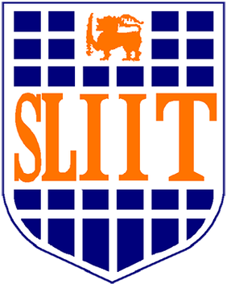

SRI LANKA INSTITUTE OF INFORMATION TECHNOLOGY (SLIIT)
(SRI LANKA'S LEADING PRIVATE HIGHER EDUCATION INSTITUTE)

HISTORY OF SLIIT (PRIVATE INSTITUTE)
- 1999: Established as a non-state, premier private higher education institution in Sri Lanka.
- 2000: Opened the main campus in Malabe to offer IT degree programs.
- 2004: Expanded academic fields to offer Business Management degrees alongside IT.
- Present: Recognized as Sri Lanka's largest non-state (Private) degree-awarding institute.
AVAILABLE FACULTIES (PRIVATE DEGREE PROGRAMS)
- Faculty of Computing – පණිවුඩ හා තොරතුරු තාක්ෂණ පීඨය
- Faculty of Engineering – ඉංජිනේරු පීඨය
- Faculty of Business – ව්යාපාර අධ්යයන පීඨය
- Faculty of Humanities & Sciences – මානවශාස්ත්ර හා විද්යා පීඨය
- School of Architecture – ගෘහනිර්මාණ ශිල්පී අධ්යයනාංශය
- Faculty of Graduate Studies & Research – පශ්චාත් උපාධි හා පර්යේෂණ පීඨය
GO TO OFFICIAL WEBSITE OF SLIIT (PRIVATE)
GO TO HOME PAGE